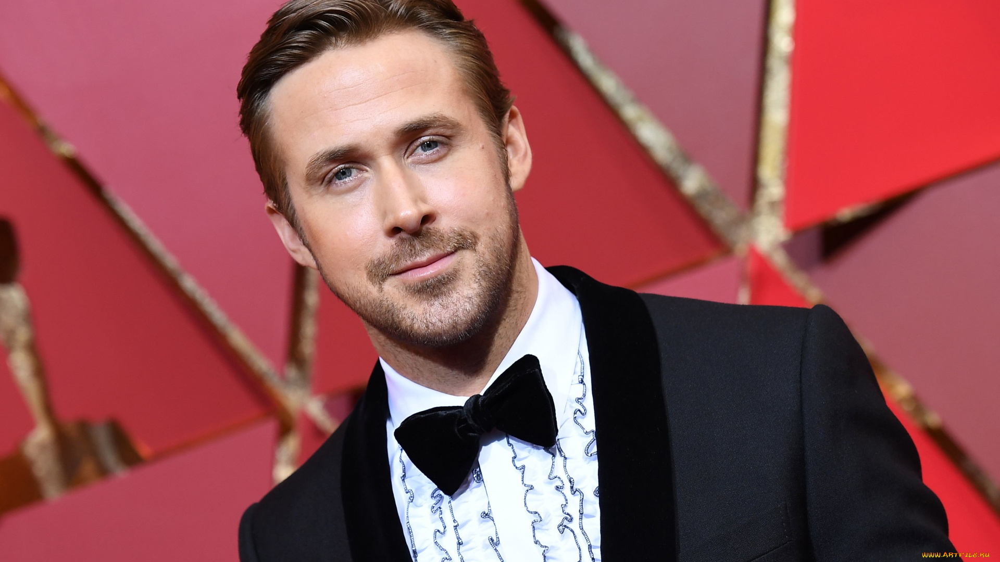
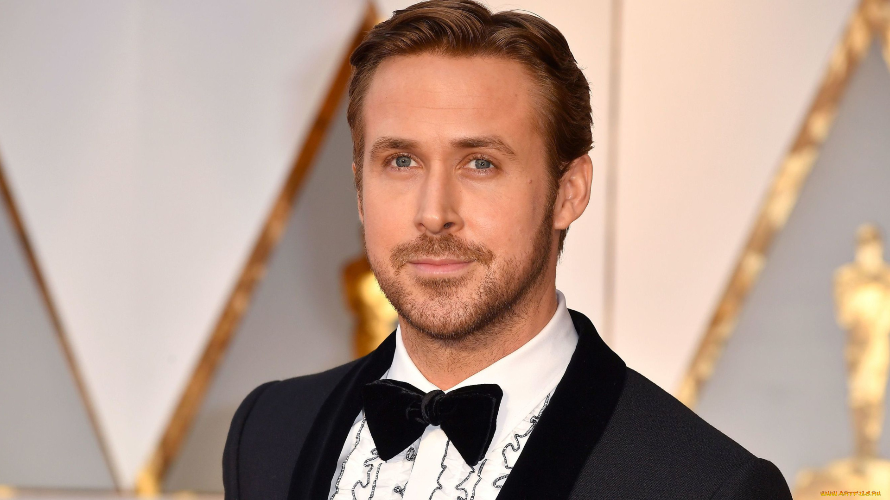

Барби была изгнана из Барбиленда из-за несоответствия его стандартам красоты. В этот момент она решает начать свою новую жизнь в реальном мире и скоро осознает, что настоящее совершенство достигается лишь через внутреннюю гармонию.
Барби на КинопоискМир недалекого будущего представляет собой сложную систему, в которой люди и репликанты соседствуют друг с другом. Репликанты выполняют самую тяжелую работу и практически лишены прав. Полицейский по имени Кей следит за репликантами, стараясь не допустить чрезмерного напряжения обстановки.
Бегущий по лезвию 2049 на КинопоискМолчаливый водитель спасает девушку от гангстеров. Неонуар с Райаном Гослингом и пульсирующим саундтреком
Драйв на Кинопоиск